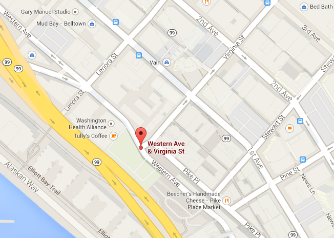
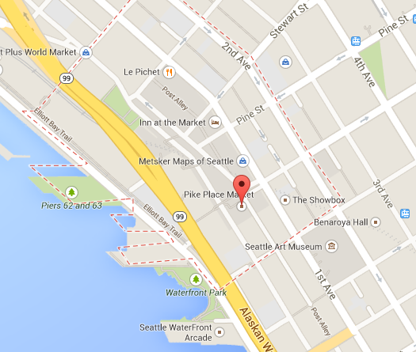

Untitled Totem Pole

Western Ave and Virginia St
Marvin Oliver and James Bender (1984)
Carved cedar pole
-
Marvin Oliver selected trees for the artworks from the Skagit National Forest and then roughed out the two poles. James Bender designed and carved the traditional totem pole after the original concept by Oliver.
The Untitled Totem Pole, based on traditional designs of the Haida people, depicts not a prescribed legend, but symbolic figures that recognize qualities of nearby Pike Place Market, as well as the surrounding city. From the top, the figures include Raven holding a Salish woman’s spinning whorl, Human holding a potlatch of prosperity, Little Human the messenger, Killer Whale or Blackfish, Little Raven and Bear holding a hawk.
Bender is an artist known for his Northwest Coast Native American artworks. Oliver is a well-known Northwest sculptor and printmaker. He has created many public artworks, including A Salish Welcome (2010), which is part of the city of Seattle’s collection.
-
Find It

Rachel

Pike Place entrance
Georgia Gerber (1986)
Bronze piggy bank. Pike Place Market Foundation Collection
-
Rachel is a bronze cast piggy bank created by Georgia Gerber, a sculptor from Whidbey Island, Washington. Rachel weighs in at 550 pounds (250 kg) and was named after a real 750-pound pig who won the 1985 Island County Fair. She has been located since 1986 at the corner of Pike Place under the iconic “Public Market Center” sign and clock. Legend has it that if you rub Rachel’s snout and make a donation, you’ll have good luck. Her cousin Billie the Piggy Bank arrived in the Market in 2011 and sits on Western Avenue at the bottom of the Hillclimb.
Rachel was the inspiration behind the Pigs on Parade fundraiser throughout downtown Seattle in 2001 and again in 2007 for the Market’s centennial celebration.
-
Find It

Tree of Life

Western Ave and Virginia St
Clark Wiegman, Karen Kiest and Kim Lokan, (2012)
Stainless steel and tempered glass. Homeless Remembrance Project
-
Women in Black and WHEEL (Women's Housing and Equality Enhancement League) dedicated this permanent memorial to remember the homeless people who have lived and died in Seattle. The leaf cutouts represent those who we have lost- the leaves were printed with the names of deceased Seattlites and have been scattered throughout the city.
Blown by winds of change, a lone iconic tree bends while rooted to the earth. Metaphorically, this image represents both the difficult challenges and the encouraging possibilities of real change.
-
Find It